📑 目錄導覽
1. 軟體簡介與系統架構
ETC EOS OSC RFR Controller 是一款專為 ETC Eos 系列燈光控台（包括 Apex、Gio、Ion Xe、Element 2 以及 ETCnomad）打造的專業全功能無線遙控軟體。軟體完全模擬實體 RFR 遙控器與進階工作台功能，提供零延遲雙向 OSC 通訊、即時狀態回傳、多功能滾輪控制、推桿矩陣、CIE 1931 色域圖、以及最先進的 Gemini 3.1 Live 智慧語意大腦。
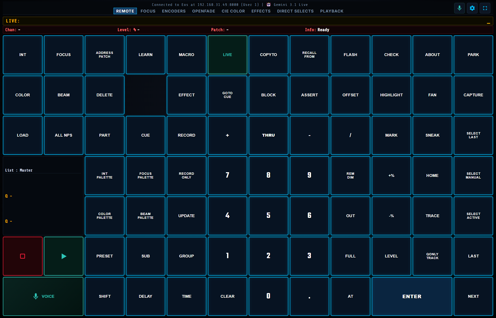
主要核心特色
⌨️ 72 鍵專業數字鍵盤
完整對應 ETC Eos 官方鍵位，支援 Live、Blind、Sneak、Rem Dim、Palettes、Update 等所有語法。
🎛️ 8 組高精度自訂旋鈕
提供 Position、CMY、RGB、Optics、Shutter、Augment3d 3D 空間等 11 大類、超過 60 種參數自訂與微調。
🎨 CIE 1931 色彩選取器
直覺式色域圖選色、P1/P2 雙點色彩漸變混色、3200K/5600K 常用色溫色卡一鍵切換發送。
🎚️ 10 軌推桿與 Effect 矩陣
支援 Submaster、Cue List、Grandmaster 分控，搭配 Size/Rate/Trail/Grouping 絕對值特效推桿。
🎙️ Gemini AI 智慧語音
支援自然語言對話調光（如「1到5號全亮」、「側光調成暖黃色」），免電腦端本機或雲端極速解析。
📱 跨平台多裝置支援
Windows PC、Android 專屬 APK 原生應用、iOS Safari PWA 全螢幕模式，一鍵即可同步連線。
2. 快速啟動與連線教學
軟體採用輕量化 Python 背景服務與極速前端架構，可透過目錄中的 run.bat 一鍵啟動：
🚀 Windows 本機啟動步驟
- 點擊執行根目錄的
run.bat批次檔。 - 系統將自動啟動 Python OSC 橋接伺服器（預設監聽連接埠
8080）。 - 使用 Chrome、Edge 或平板瀏覽器開啟
http://localhost:8080或區域網路 IP（例如http://192.168.1.100:8080）。 - 點擊右上角齒輪圖示 ⚙ 進入設定視窗，輸入控台 IP 並儲存即可完成連線。
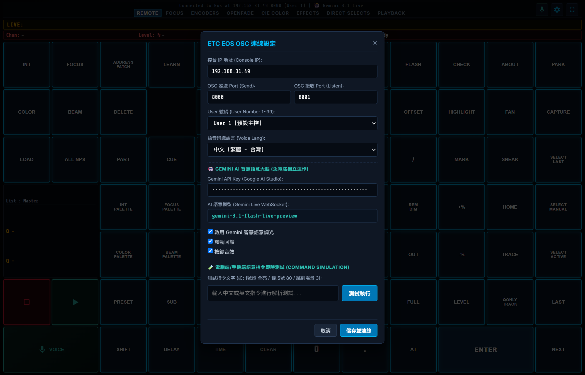
設定視窗各項參數說明
| 設定項目 | 預設值 | 功能與詳細說明 |
|---|---|---|
| 控台 IP 地址 (Console IP) | 192.168.31.49 |
ETC 控台或 ETCnomad 電腦在區域網路中的 IP 位址（例如 192.168.1.101）。 |
| OSC 發送 Port (Send) | 8000 |
傳送指令至 ETC 控台的 UDP 接收連接埠（預設 8000）。 |
| OSC 接收 Port (Listen) | 8001 |
接收來自 ETC 控台狀態回傳（Live 狀態、Cue 編號等）的 UDP 連接埠。 |
| User 號碼 (User Number) | User 1 |
指定目前遙控器在 Eos 系統中的 User ID（1~99）。不同 User 可獨立選燈互不干擾。 |
| 語音辨識語言 (Voice Lang) | zh-TW (繁體中文) |
設定語音辨識模型語系（支援繁體中文、普通話、English US）。 |
| Gemini API Key | 已內建 | Google AI Studio 金鑰，驅動 Gemini 3.1 Live 即時自然語言語意解析。 |
| 震動與按鍵音效 | 啟用 (Checked) |
按鍵觸發時提供觸覺與聲學回饋，模擬實體按鍵敲擊手感。 |
| 指令即時測試 (Simulation) | - | 可直接在輸入框輸入中文測試語音解析與 OSC 指令生成效果。 |
3. ETC Eos 控台端 OSC 網路設定
為了讓 ETC 控台能與本控制器正常雙向溝通，請在 ETC 控台（或 ETCnomad）中完成以下設定：
🛠️ ETC Eos 控台端設定流程
- 在 Eos 主畫面按下 Browser 或按 Displays → 點選 Setup。
- 進入 System Settings → 選擇 Show Control。
- 在 OSC 標籤頁進行以下配置：
- OSC RX (Receive)：設為
Enabled (開啟)。 - OSC TX (Transmit)：設為
Enabled (開啟)。 - OSC UDP RX Port：設為
8000（對應軟體端的 Send Port）。 - OSC UDP TX Port：設為
8001（對應軟體端的 Listen Port）。 - OSC UDP TX IP Address：設為執行此軟體之電腦/手機/平板的 IP 位址，或設為廣播位址（如
255.255.255.255）。 - String RX / TX：設為
Enabled。
- OSC RX (Receive)：設為
- 回到 Live 畫面，此時軟體頂部連線狀態將顯示綠色 Connected to Eos at [IP]:8000。
⚠️ 防火牆與網路注意事項
請確保執行本軟體的裝置與 ETC 控台處於同一個 Wi-Fi 或區域網路網段（Subnet）。Windows 電腦請確認 Windows 防火牆允許 Python 與 UDP 8000 / 8001 通訊，避免封包遭阻擋。
4. REMOTE 分頁：72 鍵專業調光鍵盤
REMOTE 分頁 是最核心的主控工作台，具備完整 72 顆標準 EOS 佈局按鍵與即時 Master Cue 播放器，提供與官方硬體一模一樣的操作體驗。
頂部即時狀態列 (Live Display Panel)
| 顯示欄位 | 圖示 / 標籤 | 功能說明 |
|---|---|---|
| LIVE 命令行 | LIVE: [指令] _ |
即時顯示目前輸入中的語法字串（如 Chan 1 Thru 10 At Full Enter）。 |
| Chan (頻道) | Chan: 1 |
當前選取的目標燈具 Channel 編號。 |
| Level (亮度) | Level: 100% |
當前選取燈具的實際輸出亮度百分比。 |
| Patch (迴路) | Patch: 1/1 |
顯示該燈具對應之 DMX 輸出 Universe / Address。 |
| Info (系統狀態) | Info: Ready |
顯示控台回傳訊息、模式狀態或巨集執行提示。 |
核心功能鍵分區介紹
🟦 語法與模式鍵
LIVE SNEAK REM DIM HOME HIGHLIGHT FAN 等舞台調燈關鍵指令。
🟨 Palette 調色盤鍵
INT PALETTE FOCUS PALETTE COLOR PALETTE BEAM PALETTE PRESET。
🔢 數字與範圍鍵
0 ~ 9、THRU、+、-、/、.、AT、FULL、OUT、+%、-%。
▶️ Playback 主控與執行
GO (綠三角) 推進 Cue、STOP / BACK (紅方塊) 停止/倒退，並即時顯示 Active Cue 與 Pending Cue。
5. FOCUS 分頁：對焦綜合工作區
FOCUS 對焦分頁 專為燈光技術員現場對焦與微調設計，將常用四組滾輪、8 格迷你 Direct Selects 群組按鈕 與 調光語法鍵盤 完美整合在同一個畫面中，無需頻繁切換分頁。
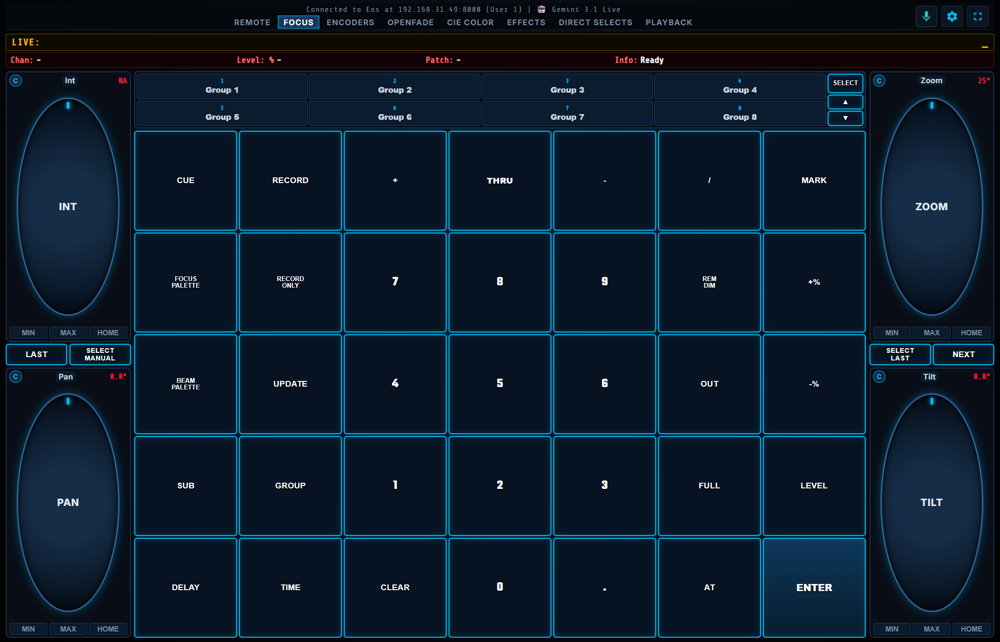
區域佈局說明
| 區域名稱 | 畫面位置 | 控制功能與操作方式 |
|---|---|---|
| 左側滾輪控制欄 | 左側垂直欄 | 上方為 Intensity 亮度滾輪，下方為 Pan 水平旋轉滾輪，中間配有 LAST 與 SELECT MANUAL 快捷鍵。 |
| Mini Direct Selects | 中央上方 (4x2 格) | 提供 8 組即時 Group 快速選燈鍵，支援 SELECT 切換類別與 ▲ / ▼ 翻頁。 |
| 中央調光數字鍵盤 | 中央下方 (7x5 鍵) | 包含數字 0~9、Cue、Record、Thru、Sub、Group、Full、Level、Delay、Time、Clear、At、Enter 等核心對焦語法鍵。 |
| 右側滾輪控制欄 | 右側垂直欄 | 上方為 Zoom 光束縮放滾輪，下方為 Tilt 垂直俯仰滾輪，中間配有 SELECT LAST 與 NEXT 換燈鍵。 |
6. ENCODERS 分頁：8 組旋鈕滾輪
ENCODERS 分頁 提供 8 組全尺寸高精度虛擬旋鈕，支援圓周拖曳、垂直滑動、滑鼠滾輪滾動等多點觸控操作方式，並具備 Layout 1~10 快速預設切換功能。
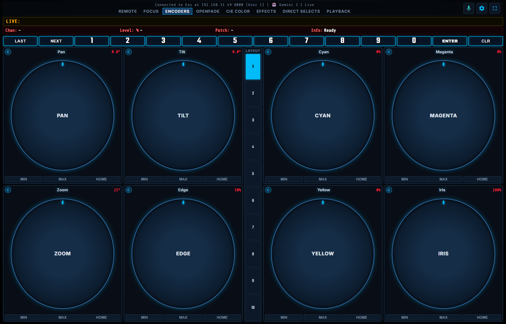
頂部快速工具列
分頁頂部整合了 LAST、NEXT、1 ~ 0 數字鍵、ENTER、CLR，讓您在旋轉滾輪調整參數時，能直接按下 Next / Last 切換下一盞燈或輸入頻道號碼，無需跳回 Remote 頁面。
10 組內建 Layout 預設清單
| Layout 編號 | 預設主題名稱 | 8 組 Encoder 預設指派參數 |
|---|---|---|
| Layout 1 | Position & Basic Beam | Pan, Tilt, Zoom, Edge, Cyan, Magenta, Yellow, Iris |
| Layout 2 | RGB & Multi-Color | Red, Green, Blue, White, Amber, Lime, CCT (色溫), Tint |
| Layout 3 | CMY & Hue/Sat | Cyan, Magenta, Yellow, Hue, Sat, Color Select, Color Temp, Crossfade |
| Layout 4 | Gobo & Beam Effects | Gobo 1, Gobo 1 Rot, Gobo 2, Gobo 2 Rot, Prism/FX, FX Speed, Anim Sel, Anim Rot |
| Layout 5 | Shutter & Framing Blades | Blade 1A, Angle 1A, Blade 2A, Angle 2A, Blade 3A, Angle 3A, Blade 4A, Frame Assy |
| Layout 6 | Optics & Beam Form | Zoom, Focus, Edge, Iris, Frost, Diffusion, Strobe, Shutter |
| Layout 7 | Intensity & Strobe | Intensity, Strobe, Shutter, Bg Intensity, Fade Rate, Fade Time, Delay Time, Scale |
| Layout 8 | Augment3d 3D Spatial | X Pos, Y Pos, Z Pos, X Rot, Y Rot, Z Rot, X Scale, Y Scale |
| Layout 9 | Scroller & Wheel | Scroller, Color Whl 1, Color Whl 2, Gobo Whl 1, Gobo Whl 2, FX Wheel, Whl Mode, Whl Speed |
| Layout 10 | Custom User Layout | 使用者全自訂義專用佈局（可自由指定 8 顆旋鈕之參數與步進） |
7. 🎛️ 滾輪參數與自訂義詳細設定
軟體中每一顆滾輪皆可完全由使用者自訂！點擊任何一顆滾輪上的參數名稱（例如「Pan」、「Zoom」），即可彈出自訂義滾輪配置視窗。
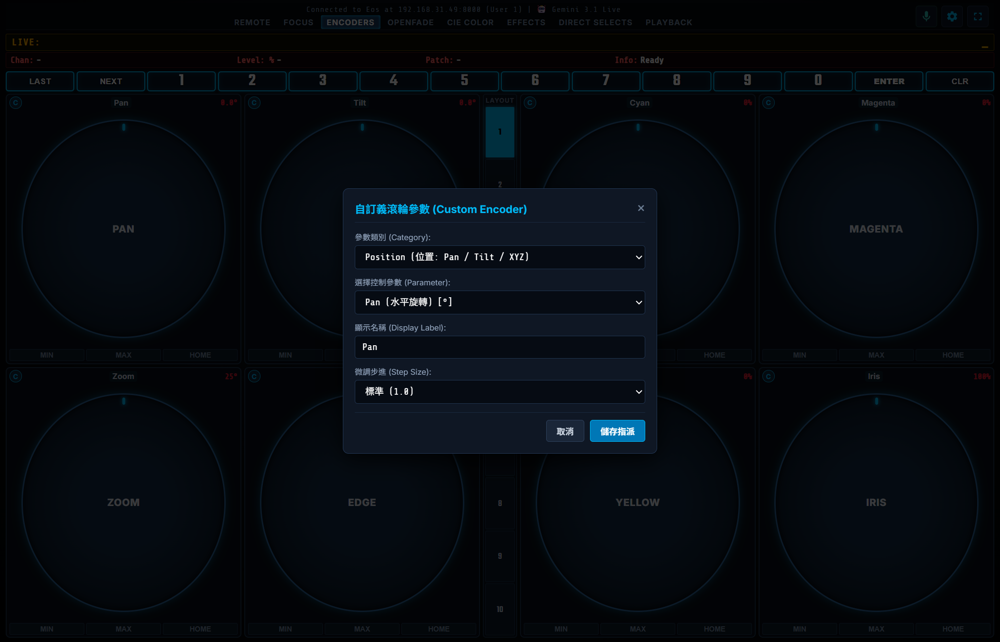
🛠️ 自訂義滾輪設定步驟
- 在 ENCODERS 或 FOCUS 分頁中，點擊滾輪頂部的「參數名稱標籤」。
- 在彈出的視窗中選擇 參數類別 (Category)（例如 Beam / Optics 或 Shutter）。
- 在 選擇控制參數 (Parameter) 下拉選單中挑選目標參數（如 Iris 光圈或 Frost 柔光片）。
- （可選）在 顯示名稱 (Display Label) 輸入您偏好的顯示文字。
- 在 微調步進 (Step Size) 選擇旋轉靈敏度：
標準 (1.0)：適合一般數值調整。細緻 (0.5)：適合顏色微調或光斑聚焦。超精確 (0.1)：適合割光刀 (Shutter) 邊緣與精密位置校準。極速 (2.0)：適合大幅度 Pan/Tilt 旋轉。
- 點擊 儲存指派 即可立即生效並儲存至設定檔中。
滾輪按鈕與模式操作說明
| 元件 / 按鈕 | 外觀標籤 | 功能與詳細操作方式 |
|---|---|---|
| 粗調 / 細調切換鈕 | C / F | 點擊滾輪左上角的藍色圓圈徽章，可在 Coarse (粗調，步進 1.0) 與 Fine (細調，步進 0.1) 之間即時切換。 |
| 數值即時顯示標籤 | 0.0° / 100% |
顯示當前參數的即時數值與單位（支援角度 °、百分比 %、赫茲 Hz、色溫 K 等）。 |
| MIN 按鈕 | MIN | 一鍵將該參數推至最小值 (0 / 0%)。 |
| MAX 按鈕 | MAX | 一鍵將該參數推至最大值 (Full / 100% / 540°)。 |
| HOME 按鈕 | HOME | 一鍵將該參數恢復為燈具原廠或 Eos 系統預設的標準歸位值 (Home Position)。 |
支援的 11 大類參數庫一覽
1. Position (位置)
Pan (水平 540°)、Tilt (垂直 270°)、X Focus、Y Focus、Z Focus。
2. Color CMY (青洋黃)
Cyan、Magenta、Yellow、Color Temp (色溫 CCT)、Tint (補償)、Color Select。
3. Color RGB (多色混色)
Red、Green、Blue、White、Amber (琥珀)、Lime (青檸)、Indigo (靛青)、UV (紫光)。
4. Color HS (色相飽和)
Hue (0~360° 色相角)、Sat (飽和度)、Color Crossfade (交叉漸變)。
5. Beam / Optics (光學)
Zoom (變焦角度)、Focus (對焦銳利)、Edge (邊緣羽化)、Iris (光圈)、Frost (柔光)、Diffusion。
6. Gobo (圖案片)
Gobo 1/2 選擇、Gobo 1/2 旋轉 (Rot/Speed)、Animation 動態盤選擇與旋轉速度。
7. Shutter / Framing (割刀)
Blade 1A~4A 推入量、Angle 1A~4A 旋轉角、Frame Assembly 切光框全域旋轉、Strobe 頻閃。
8. Effects / Prism (稜鏡特效)
Prism 1/2 選擇、Prism Rotation 稜鏡旋轉速度與方向、Beam FX 特效輪。
9. Intensity (亮度動力學)
Intensity 主亮度、Strobe 電子頻閃、Bg Intensity 背光、Fade Rate、Fade Time、Delay Time。
10. Augment3d 3D 空間
X Pos / Y Pos / Z Pos 空間坐標 (m)、X Rot / Y Rot / Z Rot 3D旋轉角度、X/Y Scale 比例縮放。
11. Scroller / Wheel (色捲輪)
Scroller 色捲機框架、Color Wheel 1/2 實體色輪、Gobo Wheel 1/2 實體圖案輪、Wheel Mode/Speed。
8. OPENFADE 分頁：同屏多工工作台
OPENFADE 分頁 採用專業三欄式同屏全覽佈局，將推桿群組 (Faders)、CIE 1931 色彩選取器 (Color Picker) 與 Effect 指令矩陣 (Matrix) 整合在單一工作台上，是現場演出控光最強大的工作台。
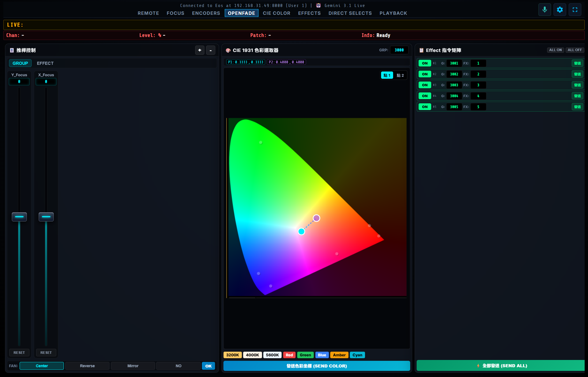
三欄工作區詳細說明
| 區域欄位 | 核心功能 | 操作亮點 |
|---|---|---|
| 左欄：推桿控制 (Fader Deck) |
Group / Effect 雙模式推桿群組，支援即時新增/刪除推桿對。 | 底部整合 FAN 排扇模式（Center 中開、Reverse 反向、Mirror 鏡射、NO 一般），設定後點擊 OK 一鍵將扇形推桿值送出至控台。 |
| 中欄：CIE 1931 (Color Picker) |
高精度舌形色度圖 (Chromaticity Diagram)，直覺式觸控拖曳選色。 | 支援 P1 / P2 雙點漸變，並附有 3200K、4000K、5600K、Red、Green、Blue、Amber、Cyan 等 8 組常用色溫色卡快捷晶片。 |
| 右欄：Effect 矩陣 (Command Matrix) |
5 通道獨立 Effect 觸發與管理矩陣。 | 每個通道可獨立設定目標 Group ID 與 Effect ID，支援單路 發送、ALL ON (全開)、ALL OFF (全關) 及 ⚡ 一鍵全部發送 (SEND ALL)。 |
9. CIE COLOR 分頁：CIE 1931 色彩工作室
CIE COLOR 專用大分頁 專為精細調色與燈光設計師打造，以高解析度全幅呈現 CIE 1931 xyY 色度圖，支援精確色彩坐標計算與色溫校準。
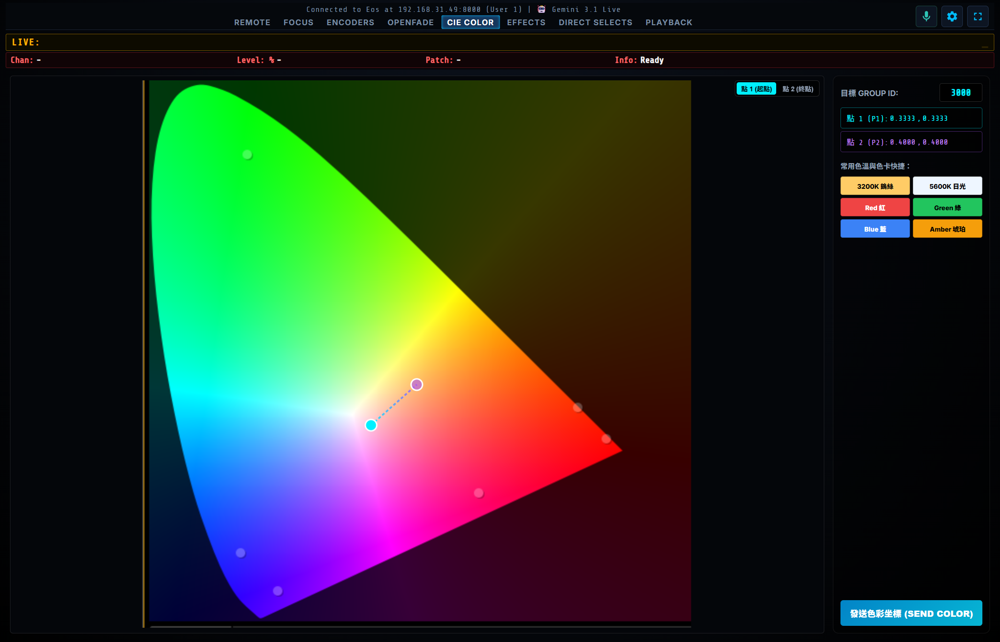
🎨 CIE 1931 調色操作步驟
- 在右側面板的 目標 GROUP ID 輸入要調色的燈具群組號碼（預設
3000）。 - 選擇 點 1 (起點 P1)，在色域圖上點擊或拖曳至目標顏色（面板將即時顯示 X / Y 坐標，例如
0.3333, 0.3333）。 - 若需要建立色彩漸變 (Fan Color)，切換至 點 2 (終點 P2) 並拖曳至第二種顏色，圖上將顯示藍色虛線連接兩點。
- 您也可以直接點擊 3200K 鎢絲、5600K 日光、Red、Green、Blue、Amber 等快捷色卡。
- 點擊底部的 發送色彩坐標 (SEND COLOR)，軟體將自動發送
/eos/color/xyOSC 封包至 ETC 控台執行混色。
10. EFFECTS 分頁：特效推桿與矩陣
EFFECTS 特效工作室專用分頁 將特效絕對值推桿與多通道特效矩陣放大至全螢幕，方便在排練或演出中進行複雜特效調試。
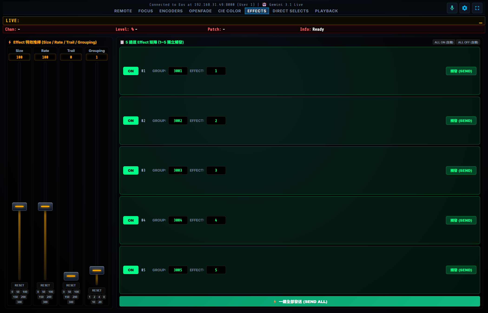
特效絕對值推桿 (Effect Absolute Faders)
| 推桿名稱 | 控制範圍 | 快捷數值按鈕 | 功能說明 |
|---|---|---|---|
| Size (特效幅度) | 0 ~ 300% | 0, 50, 100, 150, 200, 300 |
控制特效動作或顏色變化的幅度大小（預設 100%）。 |
| Rate (特效速度) | 0 ~ 300% | 0, 50, 100, 150, 200, 300 |
控制特效運行的旋轉或閃爍速度倍率（預設 100%）。 |
| Trail (尾隨衰減) | 0 ~ 300% | 0, 50, 100, 150, 200, 300 |
控制多燈跑燈特效的尾隨重疊時間長度。 |
| Grouping (分組模式) | 1 ~ 20 組 | 1, 2, 4, 8, 10, 20 |
設定參與特效燈具的分組循環週期。 |
11. DIRECT SELECTS 分頁：直選矩陣
DIRECT SELECTS 直接選擇分頁 提供 4 大 Bank（共 20 格大型觸控磁貼），支援一鍵直接選取燈具 Channel、群組 Group、各類調色盤 (IP/FP/CP/BP)、Preset、巨集 Macro 與 Cue。
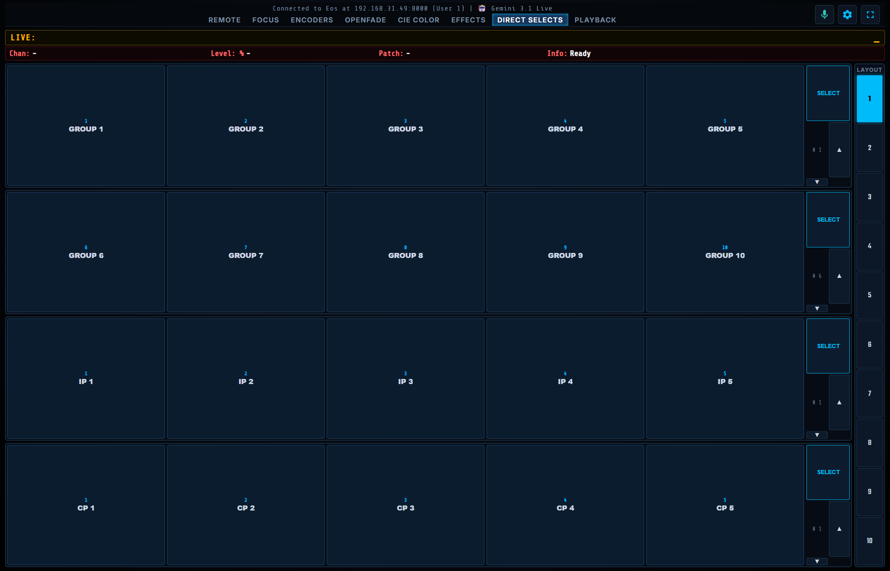
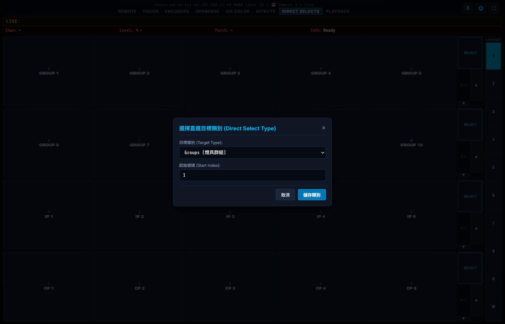
🔘 Direct Selects 設定與翻頁操作
- 點擊任何一列右側的 SELECT 按鈕，彈出類別挑選視窗。
- 在 目標類別 (Target Type) 選擇要顯示的目標（
Channels、Groups、Intensity Palettes、Focus Palettes、Color Palettes、Beam Palettes、Presets、Macros、Cues）。 - 輸入 起始號碼 (Start Index)（例如 1 或 101）並儲存。
- 點擊右側的
▲或▼按鈕，可立即以 5 個為單位向上或向下翻頁。
12. PLAYBACK 分頁：10 軌推桿與播放
PLAYBACK 分頁 提供 10 軌高解析度垂直虛擬推桿，支援馬達推桿式視覺回饋、Submaster 監聽、Cue List 播放器控制與 Bank 翻頁。
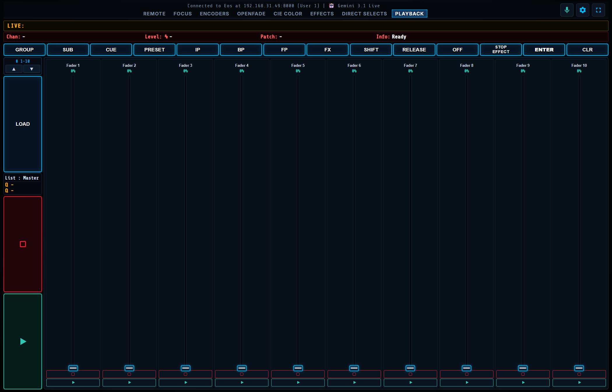
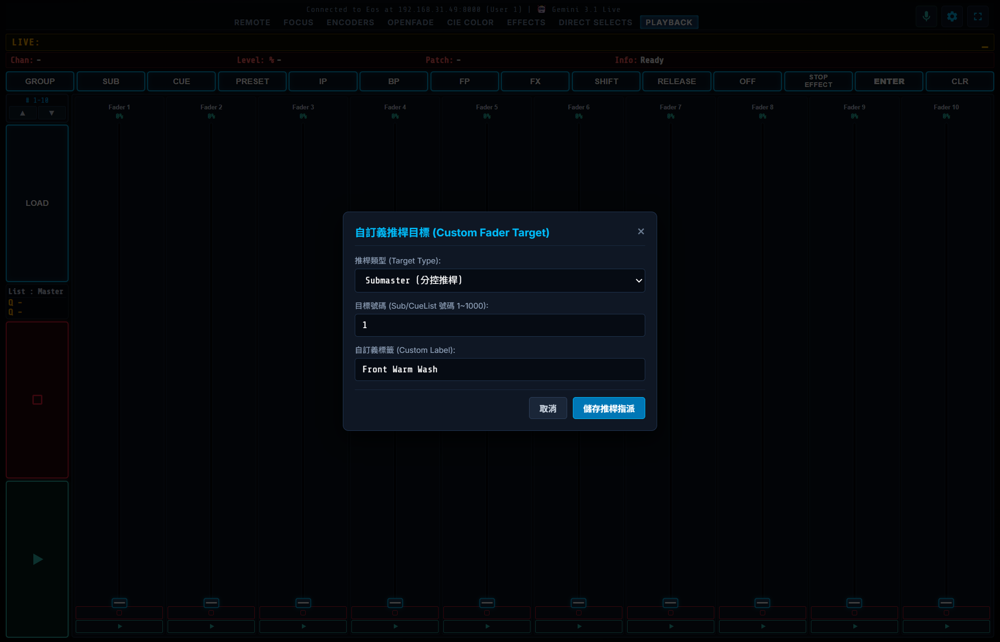
推桿功能與操作說明
| 元件項目 | 對應位置 | 操作說明 |
|---|---|---|
| Bank 步進切換器 | 左側側邊欄上方 | 顯示當前推桿號碼（例如 # 1-10、# 11-20），點擊 ▲ / ▼ 可快速整組翻頁。 |
| Master 播放器 | 左側側邊欄中央 | 顯示主輸出列表目前運行的 Active Cue 與下一首 Pending Cue，配有大型 GO 與 STOP 鍵。 |
| 垂直推桿本體 | 中央 10 軌推桿 | 支援手指拖曳與滑鼠滾輪，推桿數值由 0% ~ 100% 即時同步至 Eos 控台。 |
| Bump 按鈕 | 推桿正下方按鈕 | 短按觸發 Flash / Bump 功能，可即時將該 Submaster 推至滿載。 |
| 推桿自訂義指派 | 點擊推桿頂部名稱 | 可將推桿指派為 Submaster、Cue List、Grandmaster 或 Manual Master，並可自訂專屬名稱。 |
13. 🎙️ 語音辨識與 Gemini AI 調光
軟體內建業界首創的雙軌語音調光系統：結合 本地極速 NLP 正則解析引擎（1ms 離線保底） 與 Gemini 3.1 Live WebSocket 智慧語意大腦，讓您在舞台上能用口語化中文或英文直接控制燈光！
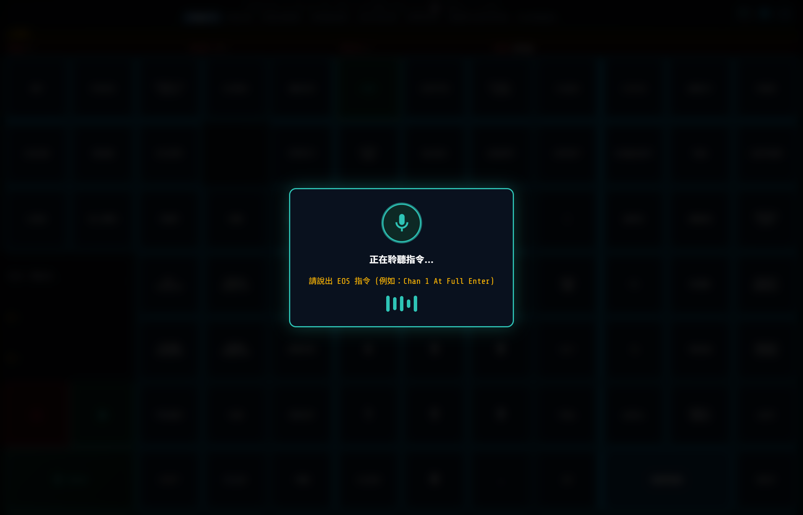
🎤 語音控制操作方式
- 在介面右上角點擊 🎙️ 圖示，或在 REMOTE 鍵盤左下角長按 VOICE 按鈕。
- 螢幕將彈出動態聲波覆蓋層並提示
正在聆聽指令...。 - 對著麥克風說出調光指令（例如：「
1號燈 全亮」或「1到5號 80」）。 - 放開按鈕或停止說話，系統將在 0.1 秒內自動完成語意解析，並將對應的 OSC 指令（如
Chan 1 At Full Enter）發送至控台執行！
💡 本地離線引擎 + Gemini AI 雙軌互補優勢
- 本地引擎 (1ms 超低延遲)：完全無需網路連線，秒速精準識別標準指令（如「3號 50」、「Group 2 Out」、「跳到場景 10」）。
- Gemini AI 大腦 (智慧語意推理)：支援模糊口語與多步驟指令（如「把面光調成暖黃色」、「所有側燈暗一半」、「換下一首 cue」）。
14. 常用語法與語音指令對照表
下表列出常用的口語指令與軟體自動轉換生成的標準 ETC Eos OSC 語法：
| 口語 / 語音輸入範例 | 解析生成之 EOS 語法 | 發送之 OSC 封包路徑 |
|---|---|---|
| 「1號燈 全亮」 / 「1 Full」 | Chan 1 At Full Enter |
/eos/user/1/cmd = "Chan 1 At Full Enter" |
| 「1到10號 50」 / 「1 Thru 10 50%」 | Chan 1 Thru 10 At 50 Enter |
/eos/user/1/cmd = "Chan 1 Thru 10 At 50 Enter" |
| 「5號燈 關掉」 / 「5 Out」 | Chan 5 Out Enter |
/eos/user/1/cmd = "Chan 5 Out Enter" |
| 「群組 2 80」 / 「Group 2 80%」 | Group 2 At 80 Enter |
/eos/user/1/cmd = "Group 2 At 80 Enter" |
| 「執行下一場」 / 「Go」 | Go (Master Playback) |
/eos/key/go |
| 「停止播放」 / 「Stop」 | Stop (Master Playback) |
/eos/key/stop |
| 「跳到場景 5」 / 「Goto Cue 5」 | Goto Cue 5 Enter |
/eos/user/1/cmd = "Goto Cue 5 Enter" |
| 「其他燈暗掉」 / 「Rem Dim」 | Rem Dim Enter |
/eos/key/rem_dim |
| 「悄悄歸位」 / 「Sneak」 | Sneak Enter |
/eos/key/sneak |
| 「全部歸位」 / 「Home」 | Home Enter |
/eos/key/home |
| 「換下一個燈」 / 「Next」 | Next |
/eos/key/next |
| 「換上一個燈」 / 「Last」 | Last |
/eos/key/last |
| 「套用顏色調色盤 3」 | Color Palette 3 Enter |
/eos/user/1/cmd = "Color Palette 3 Enter" |
| 「套用對焦調色盤 1」 | Focus Palette 1 Enter |
/eos/user/1/cmd = "Focus Palette 1 Enter" |
15. 常見問題與故障排除 (FAQ)
❓ Q1: 介面顯示「Disconnected from console」，按鍵無反應怎麼辦？
- 檢查控台 IP：點擊設定 ⚙，確認控台 IP 是否正確（可在 Eos 控台按 About 查詢控台實際 IP）。
- 檢查 Wi-Fi 網段：確認遙控裝置與控台連在同一個 Wi-Fi 路由器，且路由器未開啟「AP 隔離 (AP Isolation)」。
- 檢查 Eos Show Control 設定：確認 Eos 控台中的
OSC RX與OSC TX均已開啟 (Enabled)，且連接埠為8000 / 8001。
❓ Q2: 語音輸入沒有反應或無法開啟麥克風？
- 瀏覽器麥克風權限：初次使用請允許瀏覽器存取「麥克風權限」。
- HTTPS / Localhost 限制：若透過手機瀏覽器連線電腦 IP，部分瀏覽器需要 HTTPS 安全連線才能啟用 Web Speech API，推薦安裝本軟體專屬之 Android APK 原生應用 即可享有完全獨立的語音辨識功能。
❓ Q3: 如何在 Android 手機或 iPad / iPhone 上全螢幕使用？
- Android 用戶：直接點擊目錄中的
install_to_phone.bat將ETC_EOS_RFR.apk安裝至手機，即可享有極速原生體驗。 - iOS (iPad / iPhone) 用戶：在 Safari 中開啟網址，點擊「分享」按鈕並選擇「加入主畫面 (Add to Home Screen)」，即可像原生 App 一樣以 100% 全螢幕橫向運行。